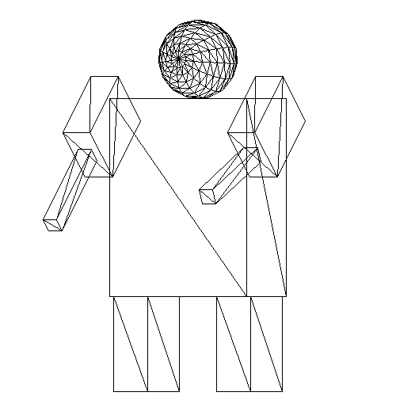

Chapter 9 Relative Coordinate Systems
Section 9.1 The Global Coordinate System
Currently we create shapes without considering the world they will be drawn in, and separately build up transformations in a single transformation matrix. We manually apply these transformations to the edge/polygon lists. Finally, we only draw our shapes to the screen when it is time to display or save.
As mentioned above, in a global coordinate system, it is difficult to create complex objects made of multiple shapes. Take this "robot" for example:

Some things to note about this image:
- There are 8 distinct parts.
- Each part is positioned relative to the main "torso" box.
- The entire robot is rotated about the y-axis.
- Both arms are rotated about the x-axis.
- The left lower arm is rotated along with the upper arm, and then rotated independently of it.
In order to achieve this level of shape dependence and independence, we need to change the way we think about transformations.
Section 9.2 Relative Coordinate Systems: In Theory
The biggest conceptual shift in moving from a global to a relative coordinate system is understanding what we are applying our transformations to. Instead of transforming shapes (i.e. generating a sphere, then rotating that sphere), we will be transforming the world.
Another way to think about this, is that in a global coordinate system, all shapes are added to your edge/polygon lists without any context. We make the shapes, dump them in the lists, and then transform the whole thing later. In a relative coordinate system, we must provide a context before adding any shapes. So we will decide to say, rotate the coordinate system, then create a shape, rotate that shape, then add it to the edge/polygon list.
Thinking about our transformation matrix as a coordinate system means we can think about creating distinct coordinate systems for different objects, creating object independence. But sometimes, we’d like to create object dependence as well. Consider the robot picture from above. Certain parts, like the arms and head, are independent of each other, while other parts are not. All the limbs are based off the state of the main "torso" box, and the lower arms are based off the upper arms.
In order to have both shape dependence and independence, we need to be able to keep track of coordinate systems as we make them. For the robot, we set up the system for the torso, then create a new system from that one for the head, once we’re done with the head, we can "rewind" back to the torso system and then make a new one based off that for the arm, and so on. So we’d like a data structure with the following features:
- Quick access to the current coordinate system.
- A way to revert back to previous coordinate systems.
- A way to create new coordinate systems based off the current one.
At any given time, we only need to look at the current coordinate system, which means this is a great place to use a stack. With a stack of matrices:
- We can always quickly access the top.
- We can pop the top to access previous matrices.
- We can push to quickly make new matrices (and with some minor customization, have theses new ones start from the previous top’s state).
Section 9.3 In Practice
Ok, so how does this all play out in code? To implement relative coordinate systems:
- Transformations modify the current coordinate system
- When we add a shape, we generate the necessary polygons/lines and immediately place them in the current coordinate system (apply the current transformations).
- Once the transformations have been applied, we then immediately render the shape to the screen.
- Once the shape has been rendered to the screen, we can clear out the edge/polygon lists.
We also need to maintain a stack of coordinate systems that behaves as follows:
peek: Return the current top.pop: Remove the current top (no need to return).push: Push a copy of the current top onto the stack. This will ensure that each pushed coordinate system will be based on the previous version.
As we say before when we introduced transformations, the order of multiplication matters greatly. In a relative coordinate system, the last (that is to say, the most recent) transformation to be applied to the world needs to be the first transformation applied to a shape. This means that the last transformation should be on the right hand side of your multiplication. In fact, every time you apply a new transformation to the current coordinate system, the new transformation needs to be on the right hand side of the multiplication. To put it simply, all transformations need to be applied as follows: \(top \times transformation\text{.}\)